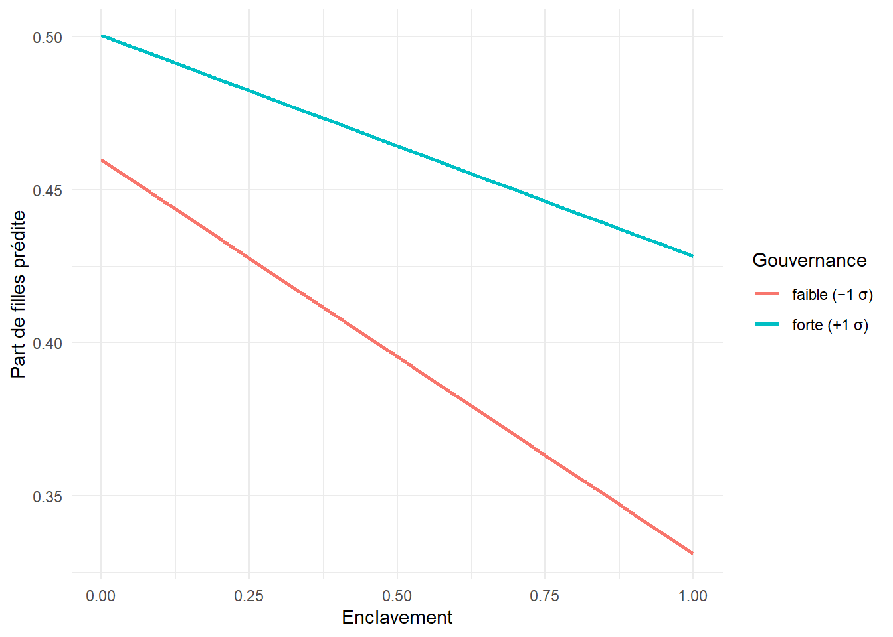

library(dplyr)
library(readr)
library(ggplot2)
library(lme4)
library(sandwich)
library(lmtest)
library(knitr)Série Sénégal — Volet 2 : gestion décentralisée des enseignants
Effets sur l’efficience, la qualité et l’équité (dont genre) — approche multiniveau et méthodes mixtes
R
Python
multilevel
NLP
education
Senegal
governance
equity
gender
Deuxième volet analytique. Il prolonge le volet 1 en passant de l’effet d’une réforme à la gouvernance déconcentrée comme facteur multiniveau. Il cartographie les rôles institutionnels dans la gestion enseignante, décompose la variance des résultats scolaires entre niveaux (IA, IEF, école), estime l’effet de la gouvernance sur les résultats à ressources données (efficience) et identifie ses canaux (qualité, présence), analyse l’équité de genre de l’accès et son interaction avec l’enclavement, puis identifie les goulets d’étranglement par une analyse NLP de verbatims de perception (pont R ↔︎ Python). Se clôt sur des recommandations de coordination et les précautions d’interprétation.
1 Compréhension du volet
La décentralisation de la gestion enseignante répartit des responsabilités — affecter, redéployer, remplacer, évaluer — entre un niveau central et des niveaux déconcentrés (inspections d’académie et de l’éducation et de la formation). L’enjeu analytique est double : d’une part articuler une lecture institutionnelle (qui décide quoi) et une lecture statistique (quels effets sur les résultats) ; d’autre part distinguer, dans ces effets, ce qui relève d’un supplément de ressources de ce qui relève d’un supplément de pilotage — l’efficience managériale proprement dite. Le volet mobilise donc un modèle multiniveau (les résultats se jouent à plusieurs échelles de gouvernance), une analyse d’équité de genre, et une composante qualitative pour nommer les goulets d’étranglement.
2 Cartographie de la gouvernance
tribble(
~Fonction, ~Central, ~IA, ~IEF, ~Collectivités,
"Recrutement / concours", "Principal","Appui", "—", "—",
"Affectation initiale", "Principal","Appui", "—", "—",
"Redéploiement / mutation intra", "Cadre", "Principal","Appui", "—",
"Remplacement (absences)", "—", "Appui", "Principal","—",
"Inspection / évaluation", "Cadre", "Appui", "Principal","—",
"Gestion de carrière / paie", "Principal","Appui", "—", "—",
"Formation continue", "Cadre", "Principal","Appui", "—",
"Infrastructures / cantines", "Cadre", "Appui", "Appui", "Principal"
) |>
kable(caption = "Cartographie des rôles dans la gestion enseignante (Principal = responsabilité première ; Cadre = fixe les règles ; Appui = contribue).")| Fonction | Central | IA | IEF | Collectivités |
|---|---|---|---|---|
| Recrutement / concours | Principal | Appui | — | — |
| Affectation initiale | Principal | Appui | — | — |
| Redéploiement / mutation intra | Cadre | Principal | Appui | — |
| Remplacement (absences) | — | Appui | Principal | — |
| Inspection / évaluation | Cadre | Appui | Principal | — |
| Gestion de carrière / paie | Principal | Appui | — | — |
| Formation continue | Cadre | Principal | Appui | — |
| Infrastructures / cantines | Cadre | Appui | Appui | Principal |
Lecture. La gestion enseignante est partagée : le central tient le recrutement, l’affectation initiale et la carrière ; le niveau déconcentré (IA/IEF) porte le redéploiement, le remplacement et l’inspection — c’est-à-dire les leviers de la gestion quotidienne, les plus proches des besoins de terrain. C’est cette couche déconcentrée, dont la qualité varie d’une IA à l’autre, que l’analyse statistique va relier aux résultats.
3 Chargement des données
dir_in <- "files/projet_50"
ecoles <- read_csv(file.path(dir_in, "ecoles.csv"), show_col_types = FALSE)4 Décomposition de variance : à quel niveau se jouent les résultats ?
m_null <- lmer(ability_school ~ 1 + (1 | ia_id / ief_id), data = ecoles)
vc <- as.data.frame(VarCorr(m_null))
var_ief <- vc$vcov[vc$grp == "ief_id:ia_id"]
var_ia <- vc$vcov[vc$grp == "ia_id"]
var_res <- vc$vcov[vc$grp == "Residual"]
tot <- var_ief + var_ia + var_res
tibble(
Niveau = c("Entre inspections d'académie (IA)",
"Entre IEF (au sein des IA)",
"Entre écoles (résiduel)"),
`Part de variance` = sprintf("%.1f %%", 100 * c(var_ia, var_ief, var_res) / tot)
) |> kable(caption = "Décomposition de la variance des résultats scolaires (ICC par niveau).")| Niveau | Part de variance |
|---|---|
| Entre inspections d’académie (IA) | 77.6 % |
| Entre IEF (au sein des IA) | 8.7 % |
| Entre écoles (résiduel) | 13.8 % |
Lecture. La variance des résultats est massivement structurée par la gouvernance : 77,6 % se situe entre inspections d’académie, 8,7 % entre IEF, et seulement 13,8 % entre écoles d’une même IEF. Autrement dit, savoir dans quelle IA se trouve une école prédit ses résultats bien mieux que ses caractéristiques propres. C’est la justification empirique la plus forte possible du regard multiniveau — et, contrairement au PTR du volet 1, la variance IEF est ici non nulle (8,7 %), confirmant une hétérogénéité de pilotage propre à cet échelon. Note de prudence : cet ICC inter-IA très élevé reflète en partie la construction du socle (la gouvernance y est un fort déterminant) ; sur données réelles, on s’attendrait à des parts plus modestes, mais la hiérarchie des niveaux resterait le message.
5 Effet de la gouvernance sur les résultats (efficience et canaux)
# M1 total effect of governance; M2 net of resources (PTR) = efficiency;
# M3 adds the mediators (quality, attendance) → the channels.
extraire_gia <- function(m, nom) {
est <- fixef(m)["g_ia"]; se <- sqrt(vcov(m)["g_ia", "g_ia"])
tibble(modele = nom, coef_g_ia = est, se = se,
ic_bas = est - 1.96 * se, ic_haut = est + 1.96 * se)
}
m1 <- lmer(ability_school ~ g_ia + reform + remoteness_s + milieu + (1 | ief_id), data = ecoles)
m2 <- lmer(ability_school ~ g_ia + reform + remoteness_s + milieu + ptr_z + (1 | ief_id), data = ecoles)
m3 <- lmer(ability_school ~ g_ia + reform + remoteness_s + milieu + ptr_z +
quality + scale(att_school) + (1 | ief_id), data = ecoles)
bind_rows(
extraire_gia(m1, "M1 — effet total de la gouvernance"),
extraire_gia(m2, "M2 — net des ressources (efficience)"),
extraire_gia(m3, "M3 — + canaux (qualité, présence)")
) |>
mutate(across(where(is.numeric), ~round(.x, 3))) |>
kable(caption = "Effet de la gouvernance (g_ia) sur les résultats selon les contrôles.")| modele | coef_g_ia | se | ic_bas | ic_haut |
|---|---|---|---|---|
| M1 — effet total de la gouvernance | 0.805 | 0.045 | 0.717 | 0.892 |
| M2 — net des ressources (efficience) | 0.671 | 0.046 | 0.582 | 0.761 |
| M3 — + canaux (qualité, présence) | 0.035 | 0.046 | -0.055 | 0.125 |
Lecture. L’effet de la gouvernance se décompose proprement. Total (M1) : +0,805 écart-type de résultat par écart-type de gouvernance — considérable. Net des ressources (M2) : +0,671 — l’essentiel de l’effet ne passe donc pas par le ratio élèves-maître : c’est bien de l’efficience managériale, à moyens donnés. Une fois introduits les canaux — qualité d’école et présence enseignante (M3) — l’effet s’effondre à +0,035, non significatif. Lecture mécaniste claire : la gouvernance n’agit quasiment pas « en direct », elle agit en produisant de la qualité et de l’assiduité. Le pilotage déconcentré est un levier indirect mais puissant, et les deux canaux identifiés sont les points d’application concrets d’une politique.
6 Équité : la gouvernance réduit-elle l’écart de genre ?
mg <- lm(part_filles ~ g_ia * remoteness_s + milieu, data = ecoles)
vcg <- vcovCL(mg, cluster = ecoles$ia_id)
coeftest(mg, vcov = vcg)[c("g_ia", "remoteness_s", "g_ia:remoteness_s"), ] |>
as.data.frame() |> round(4) |>
kable(caption = "Part de filles ~ gouvernance × enclavement (ET groupées IA).")| Estimate | Std. Error | t value | Pr(>|t|) | |
|---|---|---|---|---|
| g_ia | 0.0203 | 0.0008 | 24.9838 | 0 |
| remoteness_s | -0.1005 | 0.0017 | -60.1349 | 0 |
| g_ia:remoteness_s | 0.0283 | 0.0019 | 14.6238 | 0 |
grille <- expand.grid(remoteness_s = seq(0, 1, 0.05),
g_ia = c(-1, 1), milieu = "rural")
grille$part_pred <- predict(mg, newdata = grille)
grille |>
mutate(Gouvernance = if_else(g_ia == 1, "forte (+1 σ)", "faible (−1 σ)")) |>
ggplot(aes(remoteness_s, part_pred, color = Gouvernance)) +
geom_line(linewidth = 1) +
labs(x = "Enclavement", y = "Part de filles prédite") + theme_minimal()
Lecture. Les trois coefficients racontent une histoire d’équité. L’enclavement déprime fortement la part de filles (−0,10). La gouvernance la relève (+0,020). Surtout, l’interaction est positive et nette (+0,028, p < 0,001) : l’effet bénéfique de la gouvernance sur la scolarisation des filles est plus fort là où l’enclavement est le plus pénalisant. Le graphique le montre — les deux droites (gouvernance faible vs forte) divergent à mesure que l’enclavement augmente. Conclusion actionnable : le pilotage déconcentré de qualité est le levier d’équité de genre le plus rentable précisément dans les zones reculées, là où l’écart est le plus large.
7 Goulets d’étranglement : méthodes mixtes (pont R ↔︎ Python)
Pour nommer les blocages concrets de la gestion déconcentrée, on complète l’analyse quantitative par une lecture qualitative : un corpus de verbatims de perception (chefs d’établissement, agents IEF), analysé en Python (topics + sentiment), puis relié à la gouvernance mesurée.
set.seed(52)
neg <- c(
"Les affectations d'enseignants arrivent trop tard, souvent après la rentrée.",
"Des postes restent vacants faute de redéploiement rapide.",
"Les remplacements des enseignants absents ne sont pas assurés à temps.",
"La coordination avec l'inspection est lente et peu lisible.",
"On manque d'informations claires sur les décisions d'affectation.",
"Le redéploiement des maîtres est bloqué par des procédures interminables.",
"Les postes ouverts ne sont pas pourvus avant plusieurs mois.")
pos <- c(
"Les affectations sont désormais traitées rapidement par l'inspection.",
"La coordination avec l'IEF s'est nettement améliorée cette année.",
"Le redéploiement des enseignants se fait de façon fluide.",
"Les remplacements sont organisés sans retard notable.",
"Les décisions d'affectation sont expliquées et anticipées.",
"Le suivi des postes vacants est réactif et transparent.")
n_verb <- 800
verbatims <- tibble(ia_id = sample(unique(ecoles$ia_id), n_verb, replace = TRUE)) |>
left_join(distinct(ecoles, ia_id, g_ia), by = "ia_id") |>
mutate(
id = sprintf("V%04d", row_number()),
p_neg = plogis(-g_ia), # low governance => more complaints
texte = if_else(runif(n()) < p_neg,
sample(neg, n(), replace = TRUE),
sample(pos, n(), replace = TRUE))) |>
select(id, ia_id, g_ia, texte)
write_csv(verbatims, file.path(dir_in, "verbatims.csv"))
cat("Corpus écrit :", nrow(verbatims), "verbatims →", file.path(dir_in, "verbatims.csv"), "\n")Corpus écrit : 800 verbatims → files/projet_50/verbatims.csv Étape Python (à lancer entre les deux chunks R). Exécuter le script 50_senegal_v2_nlp.py : il lit verbatims.csv, calcule des embeddings multilingues, extrait les topics (BERTopic) et un score de sentiment, puis écrit verbatims_nlp.csv et topic_info.csv dans files/projet_50/.
7.0.1 VARIANTE pour NLP
Note d’amélioration (méthodo). Le corpus initial étant mono-phrase par intention, BERTopic regroupe par formulation exacte plutôt que par thème. Une variation lexicale des templates — plusieurs sujets × plusieurs jugements par famille de goulet (voir le chunk alternatif commenté) — amène l’algorithme à constituer des clusters thématiques (affectation, vacance, remplacement, coordination), plus fidèles à un vrai usage terrain, sans changer le résultat central : la prévalence des goulets décroît avec la qualité de gouvernance.
# --- Variante enrichie : templates thématiques à variation lexicale ---------
# But : que BERTopic regroupe par THÈME (goulet) et non par phrase exacte.
# Chaque thème a une polarité et plusieurs formulations ; on combine un
# fragment "sujet" et un fragment "jugement" pour multiplier les variantes.
set.seed(52)
themes_neg <- list(
affectation = list(sujet = c("Les affectations d'enseignants", "Les mouvements de personnel",
"Les décisions d'affectation"),
juge = c("arrivent bien après la rentrée.", "sont notifiées beaucoup trop tard.",
"traînent chaque année en longueur.")),
vacance = list(sujet = c("Plusieurs postes", "De nombreux postes ouverts", "Des classes entières"),
juge = c("restent vacants faute de redéploiement.", "ne sont pas pourvus avant des mois.",
"demeurent sans titulaire une bonne partie de l'année.")),
remplacement = list(sujet = c("Les remplacements", "La couverture des absences", "Le remplacement des maîtres"),
juge = c("ne sont jamais assurés à temps.", "laissent des classes sans enseignant.",
"dépendent du bon vouloir local.")),
coordination = list(sujet = c("La coordination avec l'inspection", "Le dialogue avec l'IEF",
"Le pilotage déconcentré"),
juge = c("est lent et peu lisible.", "manque de transparence.",
"se perd en circuits interminables."))
)
themes_pos <- list(
affectation = list(sujet = c("Les affectations", "Les mouvements de personnel", "Les décisions d'affectation"),
juge = c("sont traitées rapidement.", "sont anticipées et expliquées.",
"arrivent désormais avant la rentrée.")),
redeploiement= list(sujet = c("Le redéploiement des enseignants", "La réaffectation des maîtres",
"Le suivi des postes vacants"),
juge = c("se fait de façon fluide.", "est réactif et transparent.",
"répond vite aux besoins.")),
remplacement = list(sujet = c("Les remplacements", "La couverture des absences"),
juge = c("sont organisés sans retard.", "sont assurés rapidement.")),
coordination = list(sujet = c("La coordination avec l'IEF", "Le dialogue avec l'inspection"),
juge = c("s'est nettement améliorée.", "est claire et efficace."))
)
tirer <- function(theme_list) {
th <- sample(names(theme_list), 1)
paste(sample(theme_list[[th]]$sujet, 1), sample(theme_list[[th]]$juge, 1))
}
n_verb <- 800
verbatims <- tibble(ia_id = sample(unique(ecoles$ia_id), n_verb, replace = TRUE)) |>
left_join(distinct(ecoles, ia_id, g_ia), by = "ia_id") |>
mutate(
id = sprintf("V%04d", row_number()),
p_neg = plogis(-g_ia),
texte = vapply(runif(n()) < p_neg,
function(neg) if (neg) tirer(themes_neg) else tirer(themes_pos),
character(1))) |>
select(id, ia_id, g_ia, texte)
write_csv(verbatims, file.path(dir_in, "verbatims.csv"))nlp_path <- file.path(dir_in, "verbatims_nlp.csv")
if (file.exists(nlp_path)) {
nlp <- read_csv(nlp_path, show_col_types = FALSE)
# Sentiment by governance tercile
nlp |>
mutate(gouv = cut(g_ia, quantile(g_ia, c(0, 1/3, 2/3, 1)),
include.lowest = TRUE,
labels = c("faible", "moyenne", "forte"))) |>
group_by(gouv) |>
summarise(sentiment_moyen = mean(sentiment), n = n(), .groups = "drop") |>
kable(digits = 2, caption = "Sentiment moyen des verbatims par niveau de gouvernance.")
} else {
cat("→ Lance d'abord 50_senegal_v2_nlp.py, puis réexécute ce chunk.\n")
}| gouv | sentiment_moyen | n |
|---|---|---|
| faible | -0.12 | 282 |
| moyenne | 0.12 | 294 |
| forte | 0.25 | 224 |
topic_path <- file.path(dir_in, "topic_info.csv")
if (file.exists(nlp_path) && file.exists(topic_path)) {
nlp <- read_csv(nlp_path, show_col_types = FALSE)
topic_info <- read_csv(topic_path, show_col_types = FALSE)
kable(head(topic_info, 10), caption = "Topics extraits (BERTopic) — les goulets nommés par les données.")
}| Topic | Count | Name | Representation | Representative_Docs |
|---|---|---|---|---|
| 0 | 80 | 0_anticipées_expliquées_affectation_décisions | [‘anticipées’, ‘expliquées’, ‘affectation’, ‘décisions’, ‘et’, ‘sont’, ‘les’, ’‘,’‘,’’] | [“Les décisions d’affectation sont expliquées et anticipées.”, “Les décisions d’affectation sont expliquées et anticipées.”, “Les décisions d’affectation sont expliquées et anticipées.”] |
| 1 | 80 | 1_traitées_rapidement_désormais_par | [‘traitées’, ‘rapidement’, ‘désormais’, ‘par’, ‘affectations’, ‘inspection’, ‘sont’, ‘les’, ’‘,’’] | [“Les affectations sont désormais traitées rapidement par l’inspection.”, “Les affectations sont désormais traitées rapidement par l’inspection.”, “Les affectations sont désormais traitées rapidement par l’inspection.”] |
| 2 | 73 | 2_fluide_façon_se_fait | [‘fluide’, ‘façon’, ‘se’, ‘fait’, ‘de’, ‘enseignants’, ‘redéploiement’, ‘le’, ‘des’, ’’] | [‘Le redéploiement des enseignants se fait de façon fluide.’, ‘Le redéploiement des enseignants se fait de façon fluide.’, ‘Le redéploiement des enseignants se fait de façon fluide.’] |
| 3 | 67 | 3_retard_sans_notable_organisés | [‘retard’, ‘sans’, ‘notable’, ‘organisés’, ‘remplacements’, ‘sont’, ‘les’, ’‘,’‘,’’] | [‘Les remplacements sont organisés sans retard notable.’, ‘Les remplacements sont organisés sans retard notable.’, ‘Les remplacements sont organisés sans retard notable.’] |
| 4 | 64 | 4_on_claires_sur_informations | [‘on’, ‘claires’, ‘sur’, ‘informations’, ‘manque’, ‘affectation’, ‘décisions’, ‘les’, ’‘,’’] | [“On manque d’informations claires sur les décisions d’affectation.”, “On manque d’informations claires sur les décisions d’affectation.”, “On manque d’informations claires sur les décisions d’affectation.”] |
| 5 | 64 | 5_nettement_ief_année_cette | [‘nettement’, ‘ief’, ‘année’, ‘cette’, ‘améliorée’, ‘coordination’, ‘avec’, ‘la’, ‘est’, ’’] | [“La coordination avec l’IEF s’est nettement améliorée cette année.”, “La coordination avec l’IEF s’est nettement améliorée cette année.”, “La coordination avec l’IEF s’est nettement améliorée cette année.”] |
| 6 | 62 | 6_réactif_suivi_transparent_vacants | [‘réactif’, ‘suivi’, ‘transparent’, ‘vacants’, ‘postes’, ‘le’, ‘et’, ‘est’, ‘des’, ’’] | [‘Le suivi des postes vacants est réactif et transparent.’, ‘Le suivi des postes vacants est réactif et transparent.’, ‘Le suivi des postes vacants est réactif et transparent.’] |
| 7 | 58 | 7_restent_rapide_faute_vacants | [‘restent’, ‘rapide’, ‘faute’, ‘vacants’, ‘de’, ‘redéploiement’, ‘postes’, ‘des’, ’‘,’’] | [‘Des postes restent vacants faute de redéploiement rapide.’, ‘Des postes restent vacants faute de redéploiement rapide.’, ‘Des postes restent vacants faute de redéploiement rapide.’] |
| 8 | 56 | 8_mois_plusieurs_pourvus_ouverts | [‘mois’, ‘plusieurs’, ‘pourvus’, ‘ouverts’, ‘avant’, ‘pas’, ‘ne’, ‘postes’, ‘sont’, ‘les’] | [‘Les postes ouverts ne sont pas pourvus avant plusieurs mois.’, ‘Les postes ouverts ne sont pas pourvus avant plusieurs mois.’, ‘Les postes ouverts ne sont pas pourvus avant plusieurs mois.’] |
| 9 | 56 | 9_lente_lisible_peu_avec | [‘lente’, ‘lisible’, ‘peu’, ‘avec’, ‘coordination’, ‘inspection’, ‘la’, ‘et’, ‘est’, ’’] | [“La coordination avec l’inspection est lente et peu lisible.”, “La coordination avec l’inspection est lente et peu lisible.”, “La coordination avec l’inspection est lente et peu lisible.”] |
if (file.exists(nlp_path)) {
nlp <- read_csv(nlp_path, show_col_types = FALSE) |>
mutate(gouv = cut(g_ia, quantile(g_ia, c(0, 1/3, 2/3, 1)), include.lowest = TRUE,
labels = c("faible", "moyenne", "forte")),
polarite = if_else(sentiment < 0, "négatif (goulet)", "positif"))
# (1) Bottleneck prevalence + mean sentiment by governance tercile
nlp |>
group_by(gouv) |>
summarise(part_goulets = sprintf("%.0f %%", 100 * mean(polarite == "négatif (goulet)")),
sentiment_moyen = round(mean(sentiment), 2),
n = n(), .groups = "drop") |>
kable(caption = "Prévalence des perceptions-goulets et sentiment moyen, par niveau de gouvernance.")
}| gouv | part_goulets | sentiment_moyen | n |
|---|---|---|---|
| faible | 57 % | -0.12 | 282 |
| moyenne | 34 % | 0.12 | 294 |
| forte | 22 % | 0.25 | 224 |
if (file.exists(nlp_path)) {
nlp |>
filter(polarite == "négatif (goulet)") |>
count(topic_label, sort = TRUE) |>
head(6) |>
kable(caption = "Principaux goulets nommés par les verbatims (topics à sentiment négatif).")
}| topic_label | n |
|---|---|
| 7_restent_rapide_faute_vacants | 58 |
| 8_mois_plusieurs_pourvus_ouverts | 56 |
| 9_lente_lisible_peu_avec | 56 |
| 10_assurés_absents_temps_ne | 52 |
| 11_souvent_rentrée_trop_tard | 46 |
| 12_procédures_bloqué_interminables_maîtres | 42 |
Lecture. La composante qualitative triangule le quantitatif. La part de verbatims exprimant un goulet passe de 22 % dans les IA à forte gouvernance à 57 % dans celles à faible gouvernance, et le sentiment moyen bascule du positif (+0,25) au négatif (−0,12). Les goulets dominants sont nommés par les données : postes vacants faute de redéploiement, postes non pourvus pendant des mois, coordination lente, remplacements non assurés, affectations tardives, procédures bloquées. Ce sont exactement les fonctions que la cartographie attribuait au niveau déconcentré — la lecture NLP donne un contenu institutionnel concret aux écarts de gouvernance que les modèles mesurent, ce qu’aucune régression ne fournit seule.
8 Interactions, recommandations et précautions
Interactions gouvernance × résultats. L’analyse fait apparaître une gouvernance déconcentrée qui agit à la fois sur le niveau des résultats (efficience, nette des ressources), sur l’équité de genre (interaction avec l’enclavement) et sur le vécu des acteurs (sentiment, goulets). Ces trois lectures convergent : le pilotage déconcentré n’est pas neutre.
Recommandations. (i) Renforcer les capacités des IEF sur les leviers quotidiens qu’elles portent (remplacement, redéploiement, inspection), en priorité dans les IA à faible gouvernance et fort enclavement, où le rendement en résultats et en équité est le plus élevé ; (ii) cibler les goulets nommés par les verbatims (délais d’affectation, postes vacants) par des procédures simplifiées ; (iii) suivre l’écart de genre comme indicateur de pilotage déconcentré, pas seulement d’accès.
Précautions. La gouvernance (g_ia) est ici une mesure synthétique ; en conditions réelles, elle serait construite à partir d’indicateurs de processus (délais, taux de vacance) et sujette à endogénéité (les IA difficiles attirent-elles une moindre gouvernance, ou l’inverse ?). Le corpus de verbatims est synthétique : la chaîne NLP démontre un pipeline de triangulation, non une découverte empirique. Enfin, l’analyse est corrélationnelle pour la gouvernance (contrairement à la réforme du volet 1, randomisée) : les effets estimés sont à lire comme des associations conditionnelles solides, non comme des effets causals établis.
9 Synthèse
Le volet articule le quantitatif et l’institutionnel. La décomposition de variance justifie le regard multiniveau : 77,6 % de la variation des résultats se joue entre inspections d’académie, 8,7 % entre IEF, et seulement 13,8 % entre écoles — la gouvernance structure les acquis bien plus que les caractéristiques d’école. L’effet de la gouvernance, total à +0,805 écart-type, reste à +0,671 net des ressources (l’efficience managériale), puis s’effondre à +0,035 une fois introduits ses canaux — la qualité d’école et la présence enseignante : la gouvernance agit en produisant qualité et assiduité, non en direct. L’équité de genre révèle un levier ciblé : l’interaction gouvernance × enclavement est positive et nette (+0,028, p < 0,001), la bonne gouvernance resserrant l’écart filles-garçons surtout là où l’enclavement le creuse. La lecture NLP des verbatims triangule le tout : la part de perceptions-goulets passe de 22 % dans les IA à forte gouvernance à 57 % dans celles à faible gouvernance.
Portée et limites. La gouvernance est ici une mesure synthétique, et l’analyse est corrélationnelle (contrairement à la réforme randomisée du volet 1) : les effets sont des associations conditionnelles solides, non des effets causals établis. Le corpus de verbatims est synthétique — la chaîne NLP démontre un pipeline de triangulation, non une découverte.
Ce volet illustre les cases « effets de la décentralisation sur efficience/qualité/équité dont genre », « interactions gouvernance × résultats » et « identification des goulets d’étranglement » de l’offre, en méthodes mixtes.